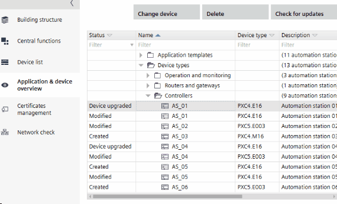
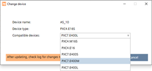

更改设备类型（网络或大小）
您可以通过更改设备类型而无需重新设计 (PXC4..)，将网络通信类型从 IP 更改为 MS/TP，反之亦然。您还可以将设备升级为具有更多功能的变体（PXC4..、PXG3.. 和 PXC7）。

PXC4 支持从 SVS400.10 开始的旧设备类型和新设备类型：
- PXC4.E16 > PXC4.E16-2
- PXC4.E16S > PXC4.E16S-2
- PXC4.M16 > PXC4.M16-2
- PXC4.M16S > PXC4.M16S-2
建议对 BACnet/SC 网络使用类型 PXC4.E16-2 或 PXC4.E16S-2。
支持以下转换：
Upscale device size from PXC4..16S
- PXC4.E16S -> PXC4.E16 / PXC4.M16S / PXC7.400S / PXC7.400M /PXC7.400L
- PXC4.M16S -> PXC4.M16 / PXC4.E16S / PXC7.400S / PXC7.400M /PXC7.400L
- PXC7.400S -> PXC7.400M /PXC7.400L
Upscale device variant of PXG3.W..
- PXG3.W100-1 -> PXG3.W100-2 or PXG3.W200-2
- PXG3.W200-1 -> PXG3.W200-2
- PXG3.W100-2 -> PXG3.W200-2
Upscale device variant of PXM30/40/50.E / -1
- PXM30.E -> PXM40.E or PXM50.E
- PXM40.E -> PXM50.E
- PXM30-1-> PXM40-1 or PXM50-1
- PXM40-1 -> PXM50-1
Downscale device
您还可以将设备缩小为功能较少的变体。支持以下转换：
- PXC7.E400L -> PXC7.E400M / PXC7.E400S / PXC5.E24 / PXC5.E003 / PXC4.x16 / PXC4.x16S
- PXC7.E400M -> PXC7.E400S / PXC5.E24 / PXC5.E003 / PXC4.x16 / PXC4.x16S
- PXC7.E400S -> PXC5.E24 / PXC5.E003 / PXC4.x16 / PXC4.x16S
- PXC5.E24 -> PXC5.E003 / PXC4.x16 / PXC4.x16S
- PXC5.E003 -> PXC7xx / PXC5.E24 / PXC4.x16 / PXC4.x16S
- PXC4.x16 -> PXC5.E003 / PXC4.x16S
- PXC4.x16S -> PXC5.E003
要查看所有支持的高档/downscale 转换，请将设备升级到最新的可用版本。
PXG.3.W.. 和 PXM... 设备类型版本必须为 2.0 或更高版本。版本 1.x 的设备必须先升级到更高版本。
在更改控制器类型之前检查更新。
Updating application templates and graphics libraries

此功能有三个主要用例：
- The planned communication type turns out to be too slow (change to IP) or too costly (change to MS/TP).
- The program simulation feature is only available for IP device types. By switching the network communication types, you are able to use the program simulation also for MS/TP devices.
- It turns out that more I/Os are required and you need to upscale to a bigger device type, which supports more I/Os (upscale to PXC4..16).
- PXC4.M.. 不支持 Modbus TCP。如果在 PXC4.E.. 设备上使用 Modbus TCP，则无法将网络通信类型从 IP 更改为 MS/TP.
- 这对于新硬件变体上不再提供功能的所有其他情况也有效。
- There is at least one engineered device.
- Device type version must be 1.1 or higher.
- Go to Building.
- Open the Application & device overview task.
- Select a device.
- Click Change device.
- The Change device dialog box opens.

- From the Compatible devices drop-down list, select the new device type.
- Click Change.
- The device type is changed.